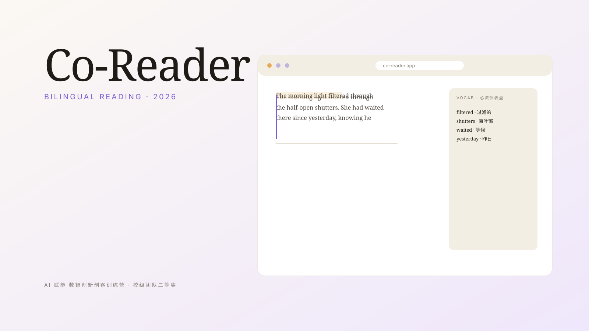

线上项目 · AI 阅读器
《Co-Reader》
一款不打断阅读节奏的双语阅读器。集成多模型，生词本 / 高亮笔记 / 心流仪表盘都是嵌入阅读本身的服务。
- 时间
- 2026.08
- 角色
- 负责人 · 策划 / 设计 / 开发 / 测试
- 团队
- 四人（队员主要负责测试与答辩）
- 主办
- AI 赋能·数智创新创客训练营
- 奖项
- 校级团队二等奖
- 技术
- 原生 HTML / CSS / JS · DeepSeek · MiniMax · Moonshot
- 数据
- 上线后累计 100+ 点赞评论 · 50+ 后台用户使用
- 笔记
- 项目视频简介 · 小红书

背景 / 问题
创客训练营要求两周内产出一个最小可行产品。我一直以来有「读英文读不下去」的问题，身边很多人也如此 —— 工具一多就分心，工具一少又读不下去。
我想做的是：把「学」嵌入「读」里。让生词、高亮、统计这些动作成为阅读的副产品，而不打断阅读本身。
我的工作
- 作为负责人统筹节奏：在需求、设计、实现、答辩四条线同时推进，并主导 PRD 输出。
- 构建生词本、高亮笔记、阅读统计与心流仪表盘 —— 核心是把「学」嵌入「读」里。
- 实现笔记导出与多模型接口抽象层，让阅读器可以无缝切换 DeepSeek、MiniMax、Moonshot 等国内直连大模型与自定义兼容端点，便于后续接入。
- 负责上线后的运维迭代与答辩材料整理。
关键设计与技术
- 前端：原生 HTML / CSS / JavaScript，单页 + 模块化，不引入重框架，便于两周内交付。
- 数据：localStorage + 云端轻同步；阅读统计基于用户事件流聚合。
- AI 抽象层：抽象出统一接口，配合 Prompt 模板做语境化释义与简短例句。
- 心流仪表盘：基于真实事件流计算「最专注的 5 分钟」「被打断的次数」等轻量指标。
- VS Code + AI 辅助开发：从需求文档到接口抽象都和高频复查。
成果
- 获校级团队二等奖。
- 上线后累计获得 100+ 点赞评论与 50+ 后台用户使用数据。
- 项目报告 + 在线部署同步输出，PRD 与源代码在 GitHub 沉淀。
去试试看
英文原文搭配自动生词，体验会顺一些。